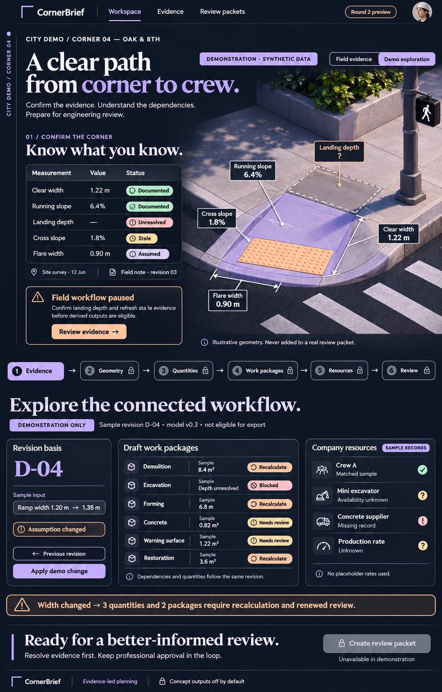
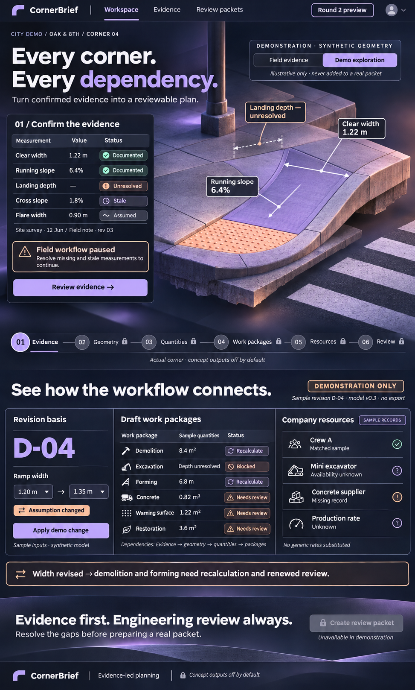
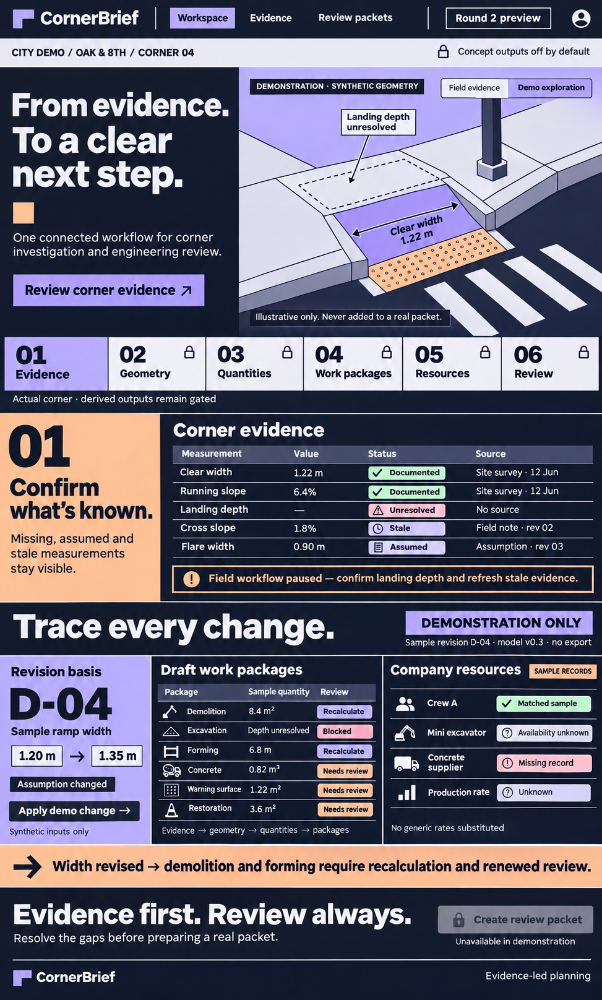
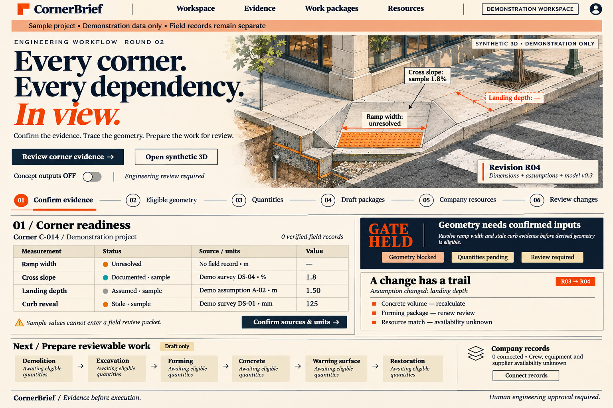
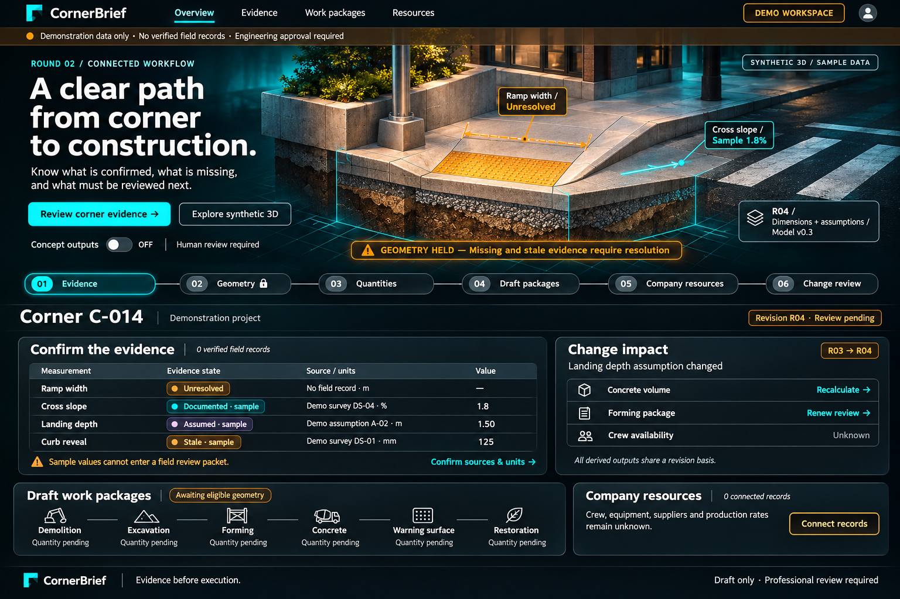
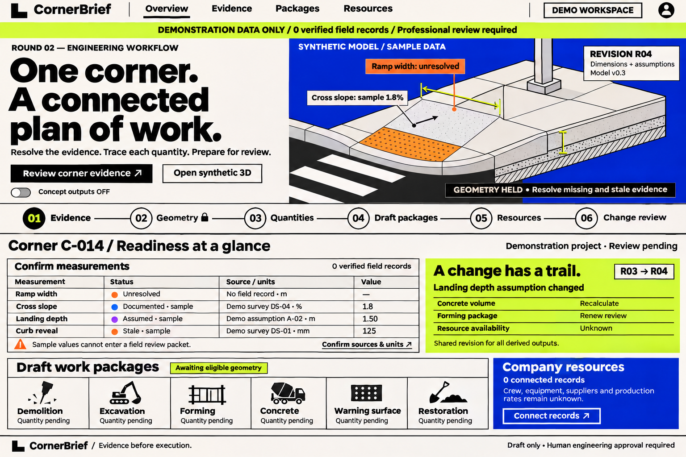

CornerBrief Round 2 design review
Engineer workflow: corner evidence → geometry eligibility → revision-linked quantities → draft work packages → company resources → recalculation flags.
Design concepts, not a working Round 2 application. Latest revision: 3; Helix status at export: ready. Publishing does not approve a concept or implement the workflow.
Run and review instructions · Seven-task Helix plan · Snapshot and image hashes
Revision 3 — latest






Revision 1 — earlier exploration






Feedback requested from Ishmam
- Run the existing app and its 3D preview; identify which engineering tasks it actually helps you complete.
- Compare the latest concepts: which direction best supports the six-step workflow, and why?
- Point out unclear evidence status, misleading quantities or missing steps.
- Recommend the smallest useful Round 2 milestone and its acceptance criteria.
Reply to Abheeshu on Slack with your recommendations. Actual field evidence remains separate from synthetic demonstration data.